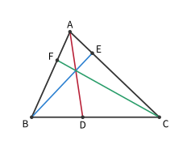
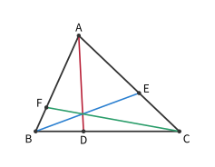
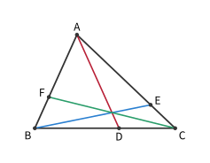

別冊練習問題 6 の解答 チェバの定理（比を求める）
(1) \(\triangle ABC\) の辺 \(AB,\ BC,\ CA\) 上に点 \(F,\ D,\ E\) をとり、\(AD,\ BE,\ CF\) が1点で交わるようにする。\(AF:FB=1:2\)、\(BD:DC=2:3\) のとき、\(CE:EA\) を求めよ。
チェバの定理
3直線 \(AD,BE,CF\) が1点で交わる \(\iff\)
\[\dfrac{AF}{FB}\cdot\dfrac{BD}{DC}\cdot\dfrac{CE}{EA}=1\]
代入
\[\dfrac{1}{2}\cdot\dfrac{2}{3}\cdot\dfrac{CE}{EA}=1\]解く
\[\dfrac{CE}{EA}=\dfrac{2}{1}\cdot\dfrac{3}{2}=\dfrac{6}{2}\ \Rightarrow\ CE:EA=3:1\]【答案】
\[CE:EA=3:1\]答
(2) \(\triangle ABC\) の辺 \(AB,\ BC,\ CA\) 上に点 \(F,\ D,\ E\) をとり、\(AD,\ BE,\ CF\) が1点で交わるようにする。\(AF:FB=3:1\)、\(BD:DC=1:2\) のとき、\(CE:EA\) を求めよ。
チェバの定理
3直線 \(AD,BE,CF\) が1点で交わる \(\iff\)
\[\dfrac{AF}{FB}\cdot\dfrac{BD}{DC}\cdot\dfrac{CE}{EA}=1\]
代入
\[\dfrac{3}{1}\cdot\dfrac{1}{2}\cdot\dfrac{CE}{EA}=1\]解く
\[\dfrac{CE}{EA}=\dfrac{1}{3}\cdot\dfrac{2}{1}=\dfrac{2}{3}\ \Rightarrow\ CE:EA=2:3\]【答案】
\[CE:EA=2:3\]答
(3) \(\triangle ABC\) の辺 \(AB,\ BC,\ CA\) 上に点 \(F,\ D,\ E\) をとり、\(AD,\ BE,\ CF\) が1点で交わるようにする。\(AF:FB=2:1\)、\(BD:DC=3:2\) のとき、\(CE:EA\) を求めよ。
チェバの定理
3直線 \(AD,BE,CF\) が1点で交わる \(\iff\)
\[\dfrac{AF}{FB}\cdot\dfrac{BD}{DC}\cdot\dfrac{CE}{EA}=1\]
代入
\[\dfrac{2}{1}\cdot\dfrac{3}{2}\cdot\dfrac{CE}{EA}=1\]解く
\[\dfrac{CE}{EA}=\dfrac{1}{2}\cdot\dfrac{2}{3}=\dfrac{2}{6}\ \Rightarrow\ CE:EA=1:3\]【答案】
\[CE:EA=1:3\]答